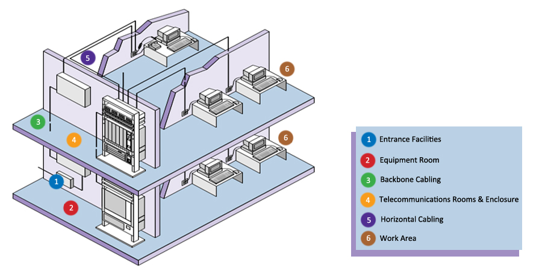
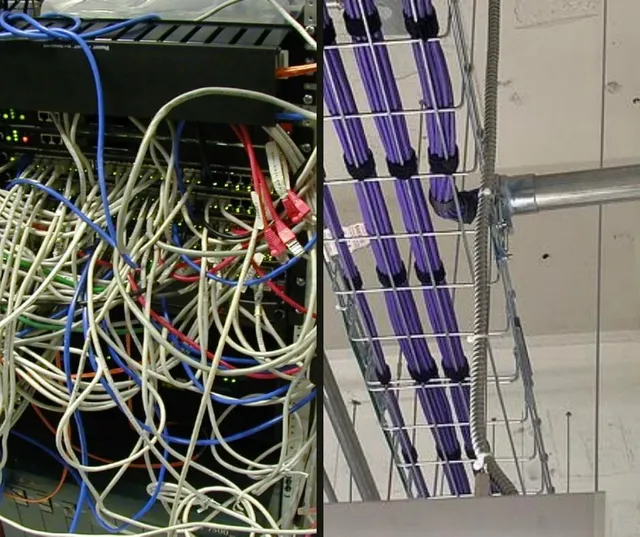
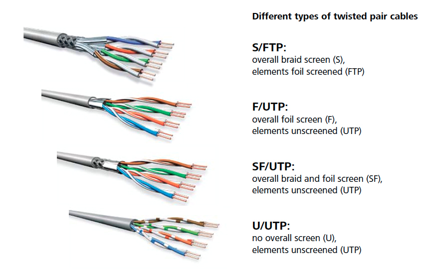
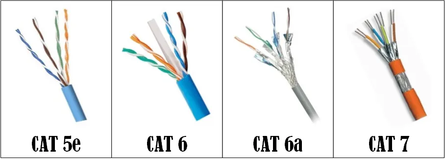
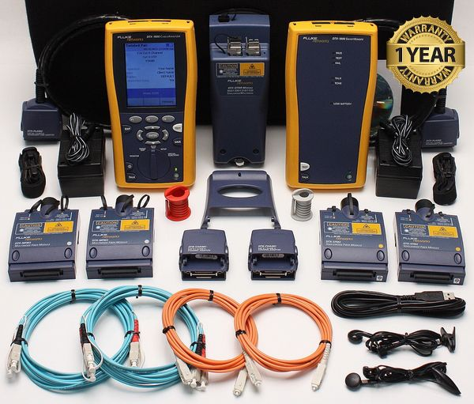
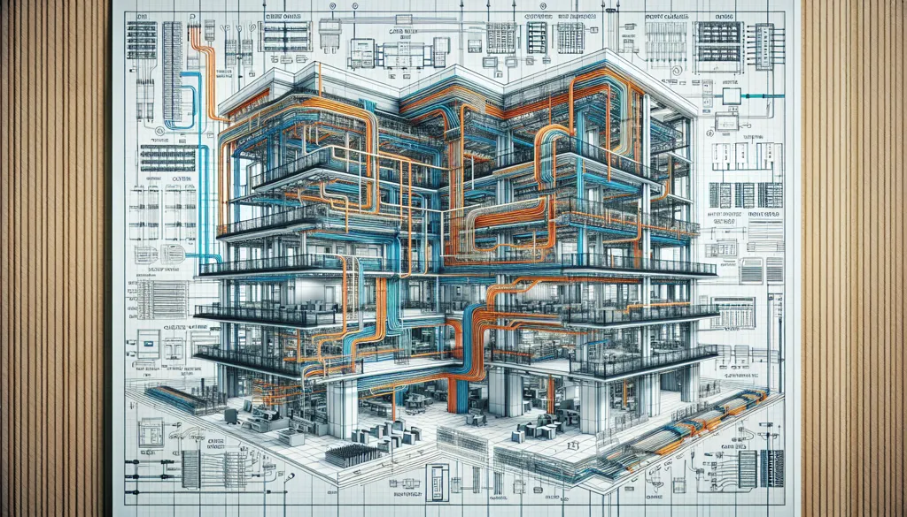

Artículos sobre Cableado Estructurado
Descubre los elementos fundamentales que componen una red cableada eficiente.

Los Componentes Clave de un Sistema de Cableado Estructurado
Leer más

La Diferencia Crucial: Cableado Estructurado vs. Cableado Convencional
Leer más

Glosario Básico de Términos de Cableado Estructurado
Leer más

Tipos de Cables de Red para Cableado Estructurado
Leer más
Entendiendo las Normas TIA/EIA para Cableado Estructurado
Leer más

Introducción a las Pruebas y Certificación de Cableado Estructurado
Leer más
Solución de Problemas Avanzados en Sistemas de Cableado Estructurado
Leer más

Diseño de un Sistema de Cableado Estructurado para un Edificio de Oficinas
Leer más